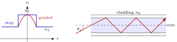

, indices
, indices  ,
,  ) accepts light within ; its weakly guiding modes are LP, the number is with
) accepts light within ; its weakly guiding modes are LP, the number is with  , and it is single-mode for ; the fundamental mode is nearly Gaussian with MFD .
, and it is single-mode for ; the fundamental mode is nearly Gaussian with MFD .Statement
- Acceptance: TIR at the core/cladding interface for rays inside the cone (Kao and Hockham 1966).
- Modes: solving the wave equation in cylindrical coordinates, Bessel in the core and in the cladding; for (weak guidance) modes group into linearly polarised LP. LP has no cutoff; LP appears at , the first zero of (Snitzer 1961).
- Cutoff wavelength
 : single-mode above it.
: single-mode above it.
Graded index
; for (parabolic) rays follow sinusoidal paths with nearly equal transit times: intermodal spread drops from (step) to . Number of modes .
Worked example
SMF-28-like fibre: µm, , : NA ; at 1550 nm → single mode; µm. MFD µm. Multimode 50 µm core, NA 0.2 at 850 nm: , (step) or ~340 (graded).
Picture: index profiles and acceptance cone

Engineering applications
Long-haul (single-mode, 1550 nm) vs datacenter (multimode OM3/OM4 with VCSELs at 850 nm) links, fibre lasers and amplifiers, fibre sensors (gyroscopes, Bragg-grating strain/temperature gauges), hollow-core photonic-crystal fibres (low latency, high power), endoscopy.
Exam-style exercise
A step-index fibre has and a measured full acceptance angle of 30° in air; core diameter 50 µm. (a) NA and  . (b)
. (b)  and number of modes at 850 nm. (c) Wavelength above which it is single mode. (d) Would a graded-index version carry more or fewer modes?
and number of modes at 850 nm. (c) Wavelength above which it is single mode. (d) Would a graded-index version carry more or fewer modes?
Solution
(a) , . (b) , . (c) µm: never in practice. (d) Fewer, , with far less intermodal dispersion.
Pitfall
assumes a step profile; bending raises the effective cutoff, and a fibre just below cutoff is very bend-sensitive (bending loss grows as the mode spreads into the cladding).